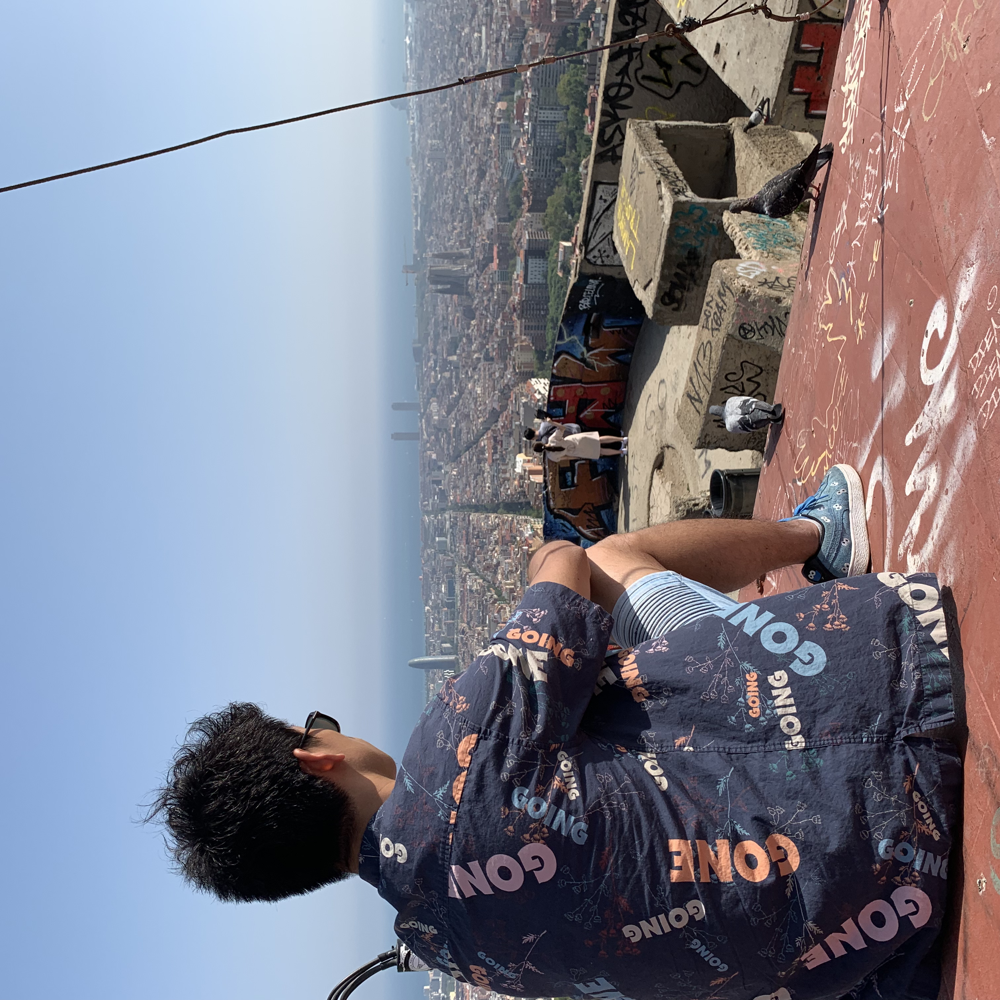

This is the inspiration blog for who wanna go abroad to living, studying, traveling.
Try yourself and be uncomfortable. Most importantly, enjoy the journey!!
Who the f*c I am

Hi, my name is Shion who had lived in the U.S.A for 8 months, when i was 18-19 and
Spain for 6 months, when i was 20-21 during uni student.
I also have been to around 15 countries and over 30 cities.
In this blog, I would like to share my experience around the world.
Why? Because I learnt so many things, such as cultural differece,
education system difference, attitude differece to economy.
moreover I have a confivdence myself by solving probelmes bymyself in the other contry.
Since that experiences, I love going to other countries with my friends, not solo.
こんにちは、しおんです。僕は大学生の頃アメリカに8ヶ月、スペインに6ヶ月住んでました。
また、約15カ国と30都市以上に旅行したことがあります。このブログでは僕が海外生活で経験したことをシェアしていきます。
日本だけで生活していると物事の味方は一方通行です。文化の違い、教育制度の違い、経済への考え方、環境問題、歴史的背景など。
何よりも海外で色んなことを自分自身で乗り越えることで、自分自身に自信を持てるようになりました。
このような経験から、海外に友達と行くのが好きになりました。1人旅は苦手です笑